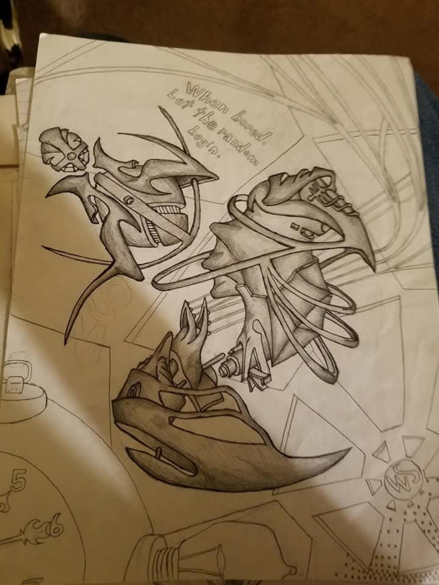
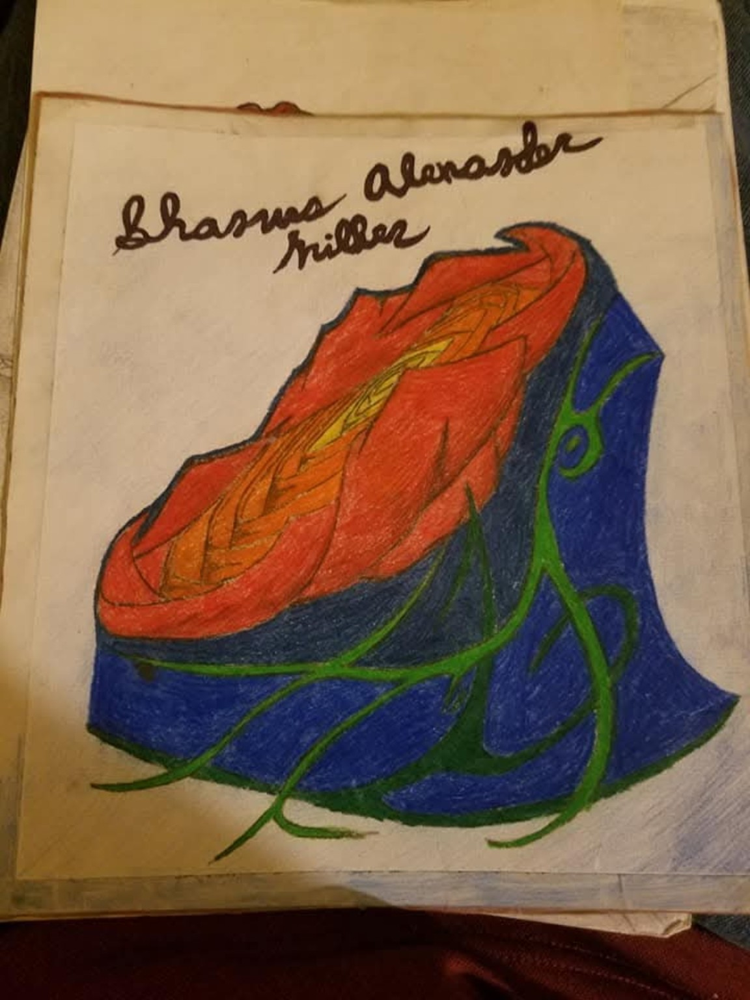
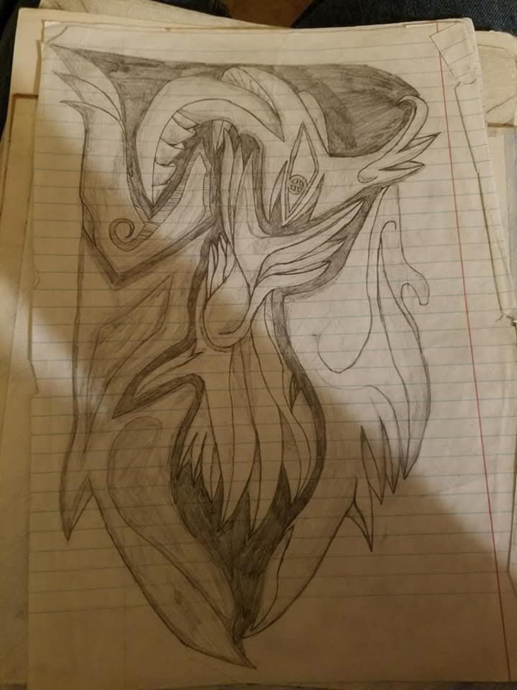
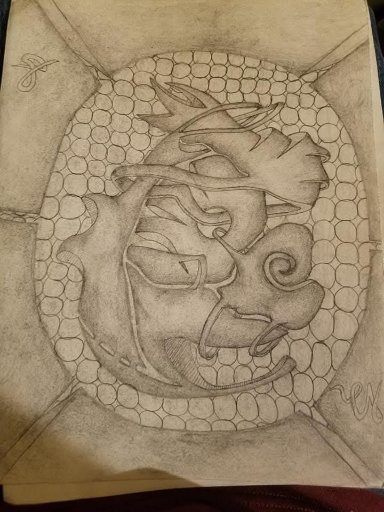
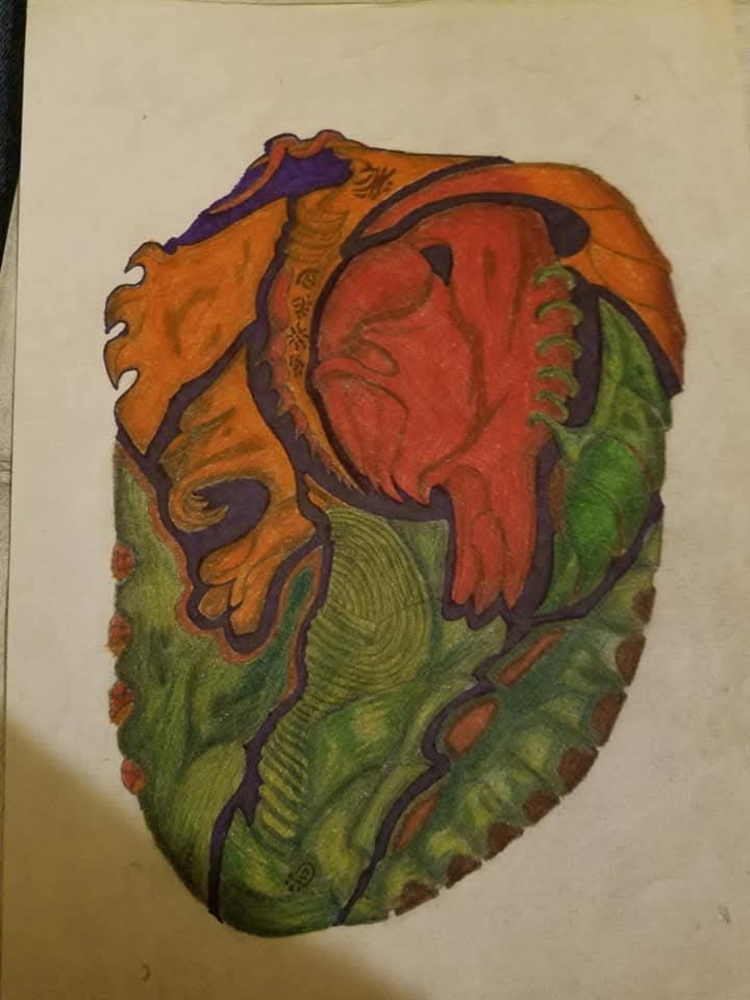
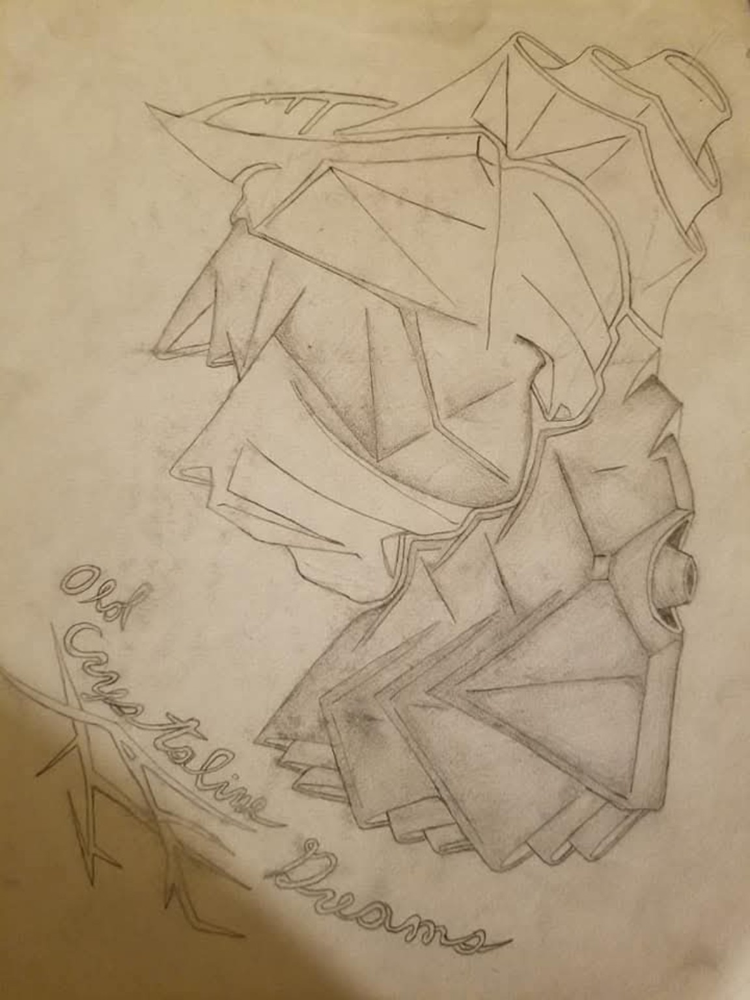

Hobbies & Intrests
Introduction
Shamus enjoys drawing, video games, and tabletop gaming. These hobbies are entertaining and help him relax after work. Drawing also allows him to turn ideas from his imagination into artwork.
Artwork Gallery






Gaming & Tabletop
Shamus enjoys playing role-playing, strategy, and science fiction games on Steam. His father introduced him to video games and tabletop gaming when he was younger.
He also enjoys playing horror games with his girlfriend Lisa. Although they often scare him, they still enjoy playing together.